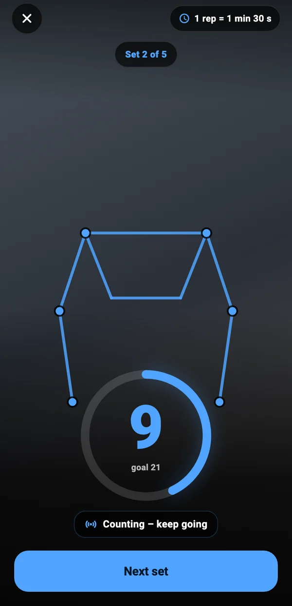
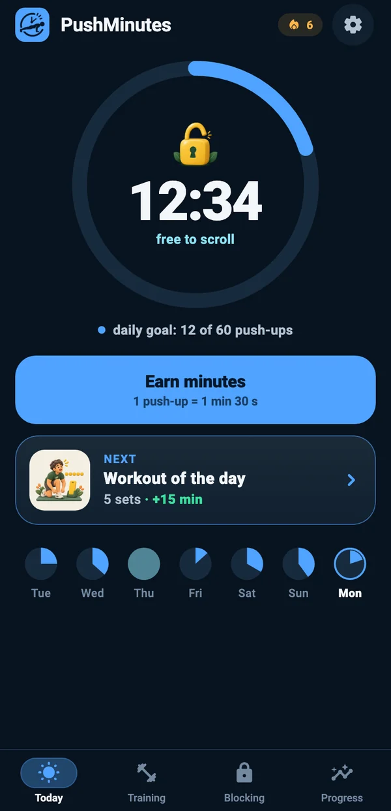
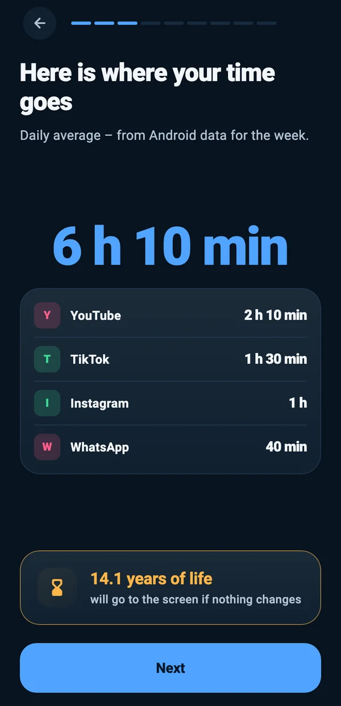
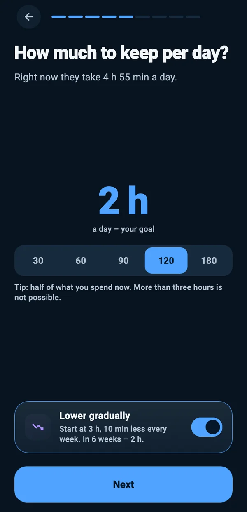
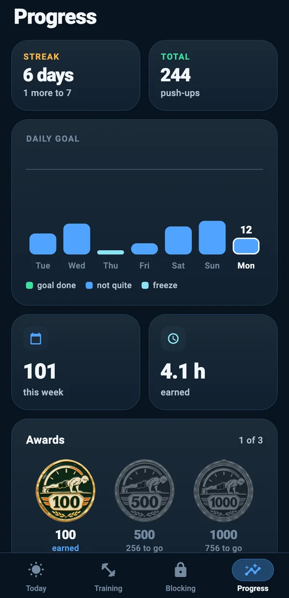

Want to scroll?Earn it first
PushMinutes locks the apps that eat your time. Push-ups and squats open them again – the phone camera counts every rep.
Android 7.0 and newer · 14 days free, no card



Every rep buys you minutes.
The price is simple: your daily limit divided by your daily goal. Hit the goal and the whole limit is yours. Do less – get fewer minutes.
How it works
Three steps to your first earned minute.
- 01
See where the time goes
PushMinutes reads Android's own usage statistics and shows the real number – per app, per day.

- 02
Decide how much to keep
Pick a daily limit from 30 minutes to 3 hours. The app starts close to what you spend now and can lower the limit by 10 minutes a week.

- 03
Earn it on the floor
Put the phone down about two metres away. The camera counts push-ups or squats, and each rep adds minutes.
Honest counting
Only full reps count.
The counter was tuned on real recordings, cheating attempts included.
Counts
- Full push-ups: chest down and back up
- Deep squats – two squats count as one push-up
- Knee push-ups – in a separate beginner mode
- Phone in front of you or to the side
Doesn't count
- Half reps
- Nodding at the camera
- Knee push-ups passed off as regular ones



Habit
Built to stick.
- Daily goal
- Hit it and your whole daily limit opens. One goal for push-ups and squats.
- Streaks with a freeze day
- One missed day a week does not break the streak.
- Strict mode
- Turning the lock off costs 120 push-ups or more in one session. Hard to do in a weak moment.
- Emergency minutes
- Once a day, for when you really need the phone.
- Time saved
- See how much less you scroll compared to before.

Privacy
Nothing leaves your phone.
- Video is never recorded or sent. Pose detection runs on the device.
- No account, no sign-up.
- No ads, no analytics.
- The app itself has no internet access.
Free for 14 days. No card needed.
After that PushMinutes needs a paid, auto-renewing subscription. The price is shown in the app before you pay, and you can cancel anytime in Google Play.
Questions
Short answers.
Does the camera record me?
No. Each frame is analysed on the phone and discarded right away. Nothing is saved or sent.
What if I can't do a single push-up?
Start with knee push-ups or squats. The daily goal adapts to your level.
Can I just turn the lock off?
Yes. With strict mode on it costs 120 push-ups or more in one session. Whether to use strict mode is your choice during setup.
Which apps can it lock?
Any app on your phone: social media, video, games, browsers. Messengers stay open unless you decide otherwise.
Is there an iPhone version?
Not yet. It is in the works.
Is it safe for my health?
Push-ups and squats are physical exercise. If you have health concerns, talk to a doctor first. PushMinutes is not a medical device.